Bienvenido a mi página web
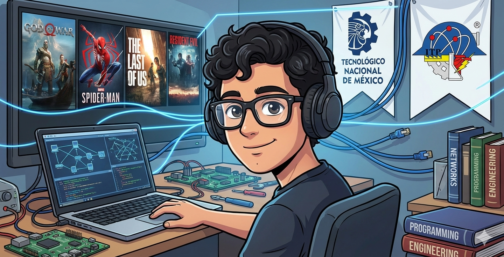
Cervantes Hernandez Alejandro
Estoy en la carrera de Ingeniería en Tecnologías de la Información y Comunicaciones en el Instituto Tecnológico de Pachuca cursando el 6to semestre.
Soy estudiante enfocado en redes y soporte técnico. Me apasiona la tecnología, la resolución de problemas y el aprendizaje continuo para desarrollarme profesionalmente en el área de infraestructura y mantenimiento de equipos.
En esta página muestro información básica de mi perfil, mi formación, mis habilidades, algunos proyectos y formas de contacto.
Sobre mí
Mi formación académica me ha permitido adquirir conocimientos en programación, bases de datos y redes. Desde que inicié la carrera me ha interesado comprender cómo funcionan los sistemas y cómo pueden optimizarse para mejorar procesos.
Me gusta trabajar en soporte técnico, redes, mantenimiento de equipos y desarrollo de sistemas que ayuden a organizar información. Mi meta profesional es especializarme en redes y soporte TI.
También me interesa seguir practicando más con proyectos reales, para mejorar mi experiencia y aprender mejores formas de documentar el trabajo.
Formación Académica
Educación Media Superior
- Institución: CBTIS 8
- Especialidad: Ofimática
- Descripción: Formación en herramientas de oficina, manejo de documentos, hojas de cálculo, presentaciones digitales y fundamentos de informática.
Educación Superior
- Institución: Instituto Tecnológico de Pachuca
- Carrera: Ingeniería en Tecnologías de la Información y Comunicaciones
- Periodo: 2023 - Actualidad
- Cursos relevantes:
- Programación
- Bases de Datos
- Redes
- Ciberseguridad
- Desarrollo Web
Desglose académico
| Nivel | Institución | Área / Carrera | Periodo |
|---|---|---|---|
| Media Superior | CBTIS 8 | Ofimática | 2020 - 2023 |
| Superior | Instituto Tecnológico de Pachuca | ITIC | 2023 - Actualidad |
Habilidades Técnicas
Estas son algunas herramientas y conocimientos que he usado y adquirido en clases y proyectos. Las sigo reforzando con práctica.
- Lenguajes: HTML, C#
- Bases de datos: MySQL
- Herramientas: GitHub, Visual Studio, VS Code
- Tecnologías: Windows Forms, CRUD, DataGridView
- Redes: Configuración básica y soporte técnico
Tabla rápida de mis habilidades
| Categoría | Conocimientos |
|---|---|
| Lenguajes | HTML, C# |
| Base de datos | MySQL |
| Herramientas | GitHub, Visual Studio, VS Code |
| Redes | Configuración básica y soporte técnico |
Proyectos Destacados
Estos proyectos me han ayudado a practicar programación, organización de datos y desarrollo de sistemas. En cada uno he aplicado diferentes herramientas aprendidas durante la carrera.
1. Sistema de Tickets
Objetivo: Gestionar incidencias técnicas dentro de una empresa.
Tecnologías: C#, MySQL, CRUD.
Mi rol: Desarrollo de formularios, validaciones y conexión a base de datos.
Aprendizaje: Organización de datos y gestión de reportes.
Galería de imágenes del proyecto:
|
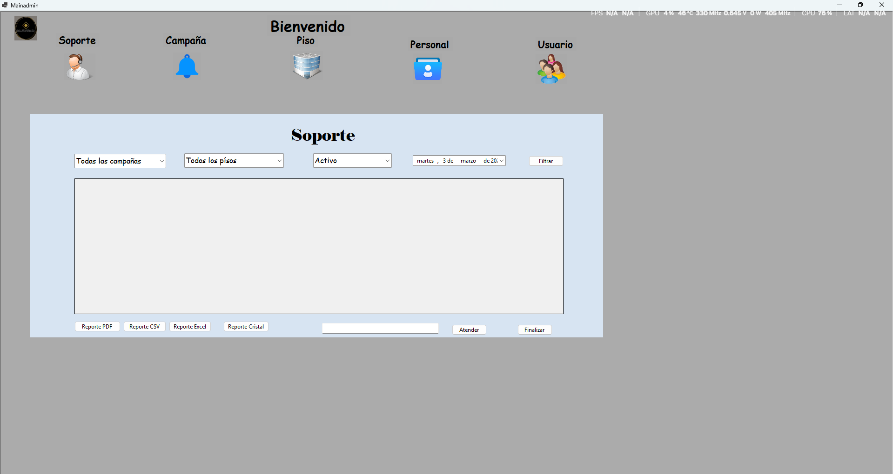 Tipos de reportes |
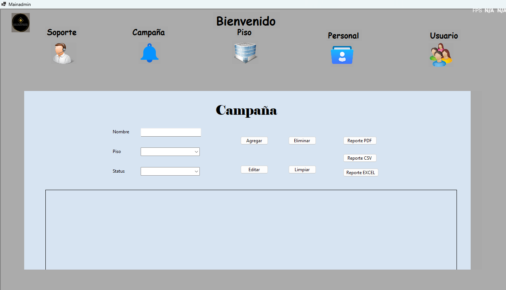 Llenado de campañas |
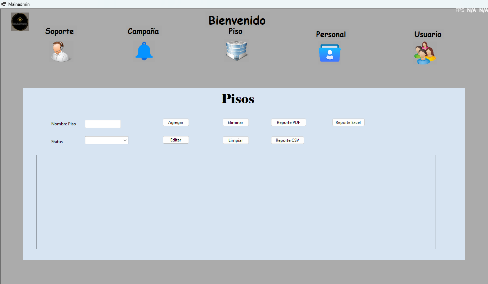 Llenado de formato para piso |
2. UniRide
Objetivo: Propuesta de app para transporte compartido universitario.
Tecnologías: Diseño de interfaz y modelo conceptual de base de datos.
Mi rol: Diseño del flujo de usuarios y validaciones.
Aprendizaje: Pensamiento centrado en el usuario.
Galería de imágenes del proyecto:
|
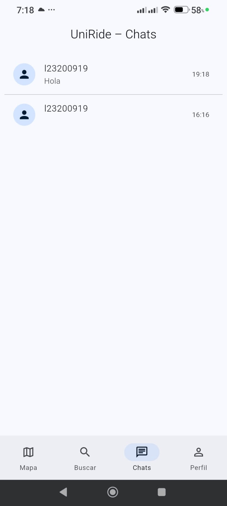 Chats con los conductores |
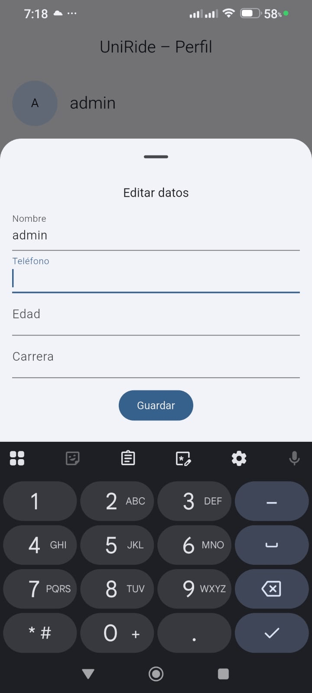 Proceso de actualización de datos de usuarios |
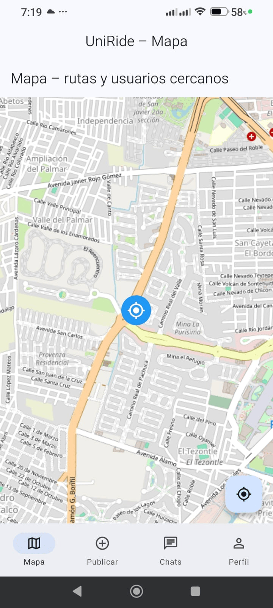 Pantalla principal del diseño |
3. Sistema de Inventario
Objetivo: Control de equipos y mantenimiento.
Tecnologías: C#, MySQL, reportes PDF/Excel.
Mi rol: Desarrollo del sistema y generación de reportes.
Aprendizaje: Administración organizada de información.
Galería de imágenes del proyecto:
|
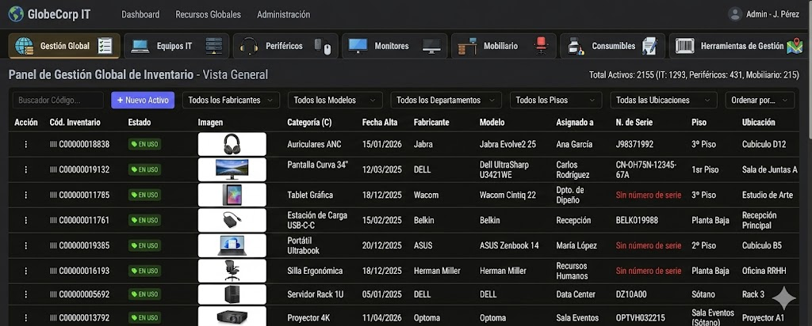 Lista de equipos en el sistema |
4. Página Web de Mercado de Laptops
Objetivo: Desarrollar una página web tipo catálogo para mostrar diferentes modelos de laptops y sus características.
Tecnologías: HTML.
Mi rol: Desarrollo de la estructura de la página web utilizando etiquetas HTML como tablas, imágenes, enlaces y secciones.
Aprendizaje: Comprender cómo estructurar una página web, organizar información de productos y presentar contenido visual de forma clara.
Galería de imágenes del proyecto:
|
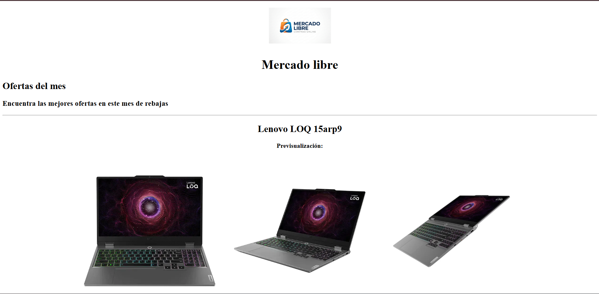 Vista principal del catálogo |
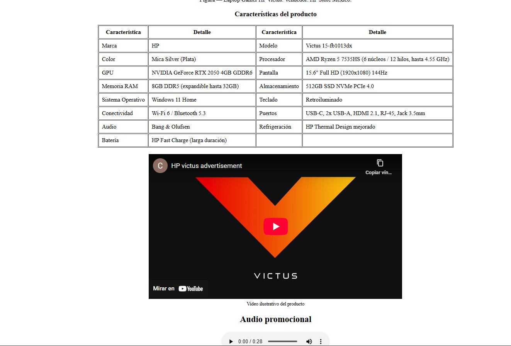 Información y características del producto |
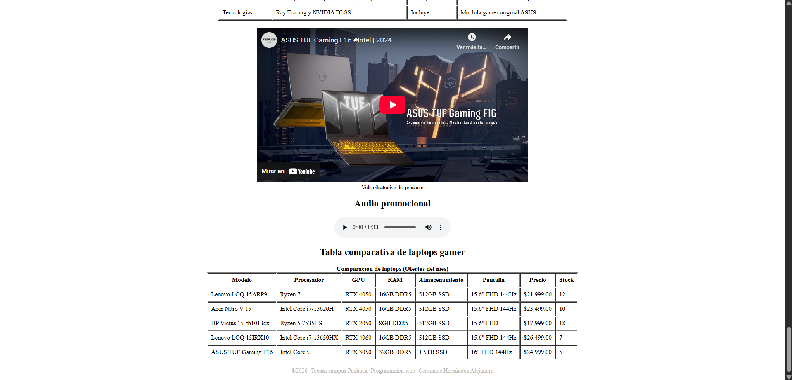 Tabla comparativa de precios y características |
Tabla de proyectos
| Proyecto | Objetivo | Tecnologías |
|---|---|---|
| Sistema de Tickets | Gestionar incidencias técnicas | C#, MySQL, CRUD |
| UniRide | Propuesta de transporte compartido | Diseño de interfaz, modelo conceptual |
| Sistema de Inventario | Control de equipos y mantenimiento | C#, MySQL, reportes |
| Página Web de Mercado de Laptops | Catálogo de laptops y características | HTML |
Código y Documentación
En mi repositorio de GitHub se encuentran algunos de mis proyectos, así como la documentación y explicación de su funcionamiento.
Haz clic en la imagen para visitar mi repositorio:

Los proyectos incluyen documentación README con explicación del funcionamiento.
Experiencia y Participación
- Servicio social en el área tecnológica.
- Prácticas profesionales en soporte técnico.
- Participación en exposiciones académicas de proyectos.
- Trabajo colaborativo en desarrollo de sistemas.
Estas actividades me han ayudado a mejorar mi responsabilidad, mi forma de explicar lo que hago y el trabajo en equipo.
Logros y Certificaciones
- AWS Academy Graduate – AWS Academy Cloud Foundations.
- Curso básico de Ciberseguridad.
| Nombre | Tipo |
|---|---|
| AWS Academy Cloud Foundations | Certificación |
| Curso básico de Ciberseguridad | Curso |
Testimonios
"Responsable y comprometido con sus proyectos académicos."
"Tiene buena disposición para aprender y mejorar."